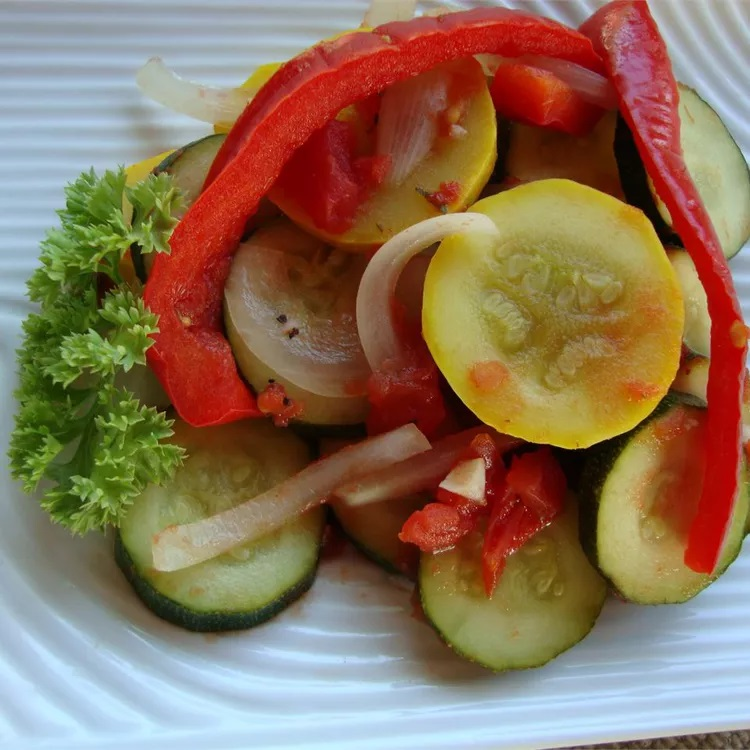

Ratatouille

Ingredients
- ½ cup olive oil, divided
- 2 onions, sliced into thin rings
- 3 cloves garlic, minced
- 2 medium zucchini, cubed
- 1 medium eggplant, cubed
- 2 medium yellow squash, cubed
- 2 green bell peppers, seeded and chopped
- 1 red bell pepper, chopped
- 1 yellow bell pepper, diced
- salt and pepper to taste
- 1 bay leaf
- 4 sprigs fresh thyme
- 4 Roma (plum) tomatoes, chopped
- 2 tablespoons chopped fresh parsley
Method
- Heat 1 1/2 tablespoons oil in a large pot over medium-low heat. Add the onions and garlic
and cook until soft, about 5 minutes.
- Meanwhile, in a large skillet, heat another 1 1/2 tablespoons oil. Add zucchini in batches
and sauté until slightly browned on all sides. Transfer each batch to the pot with the
onions and garlic.
- Working in batches, sauté eggplant, yellow squash, and bell peppers, one batch at a time,
adding oil with each batch and transferring them to the pot when sautéed.
- Season the ratatouille with salt and pepper. Add thyme sprigs and bay leaf. Cover and cook
over medium heat for 15 to 20 minutes.
- Add tomatoes and parsley. Cook, stirring occasionally, for 10 to 15 more minutes.
Remove bay leaf and adjust seasoning before serving.